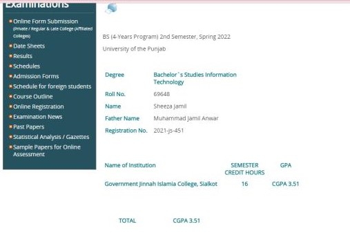

Email:promptengs@gmail.com Phone:=923287177133 Address:house26/314 main jevan shah wali gali
🔥 Unleash the Power of Prompts: Transform Your Daily Routines, Boost Productivity, and Skyrocket Revenue! 🔥
Hi, I'm Sheeza Jamil , A Prompt Engineer. My mission? To empower individuals and businesses like yours with the magic of language models,
💡 Have you ever felt stuck in the same old routine, wondering if there's a better way to approach your daily tasks?
🏆 Success is not just about working harder; it's about working smarter. As your prompt engineer, I will equip you with the tools to supercharge your productivity.
💰 But that's not all! The true magic of prompt engineering lies in its ability to unlock hidden revenue streams.
🚀 Picture this: You wake up to a flood of notifications from satisfied customers, thanking you for the transformative impact your products and services have had on their lives.
🌟 As a storyteller at heart, I understand the profound impact of narratives. My prompts go beyond mundane interactions; they create emotional connections with your audience.
🌌 The journey of prompt engineering is an ever-evolving adventure.
🤝 Are you ready to transform your daily routines, unlock untapped potential, and achieve remarkable success?
📧promptengs@gmail.com
Also Direct connect with me on LinkedIn
University of Punjab(2021-2025) Bachelor Of Science In Information technology
I am an undergraduate student majoring in BS IT. I am proud to say that I have been able to maintain a good academic record. In my first semester, I achieved a GPA of 3.48 and in my second semester, I was able to improve my performance and achieved a GPA of 3.51. I believe that my hard work and dedication have enabled me to achieve this result. I am looking forward to continuing to work hard and improve my academic performance further in the semesters to come.
Here is my Result of previous Semester: 